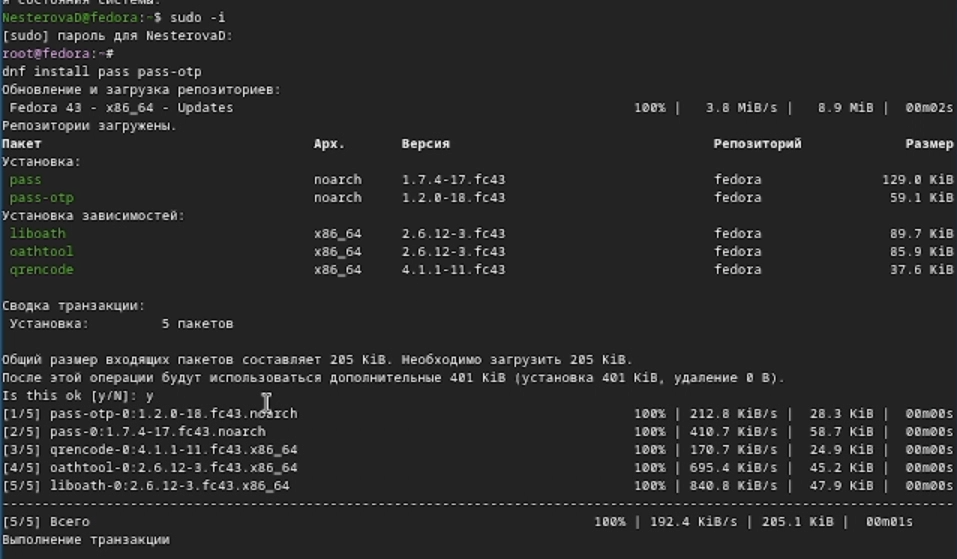
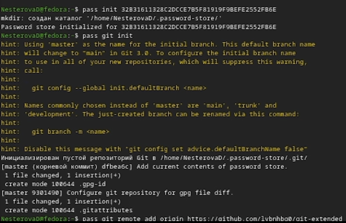
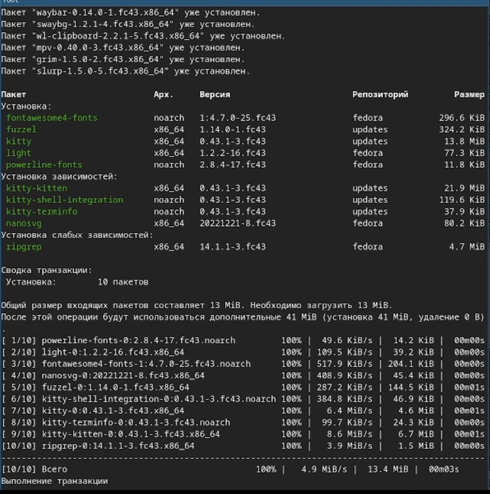
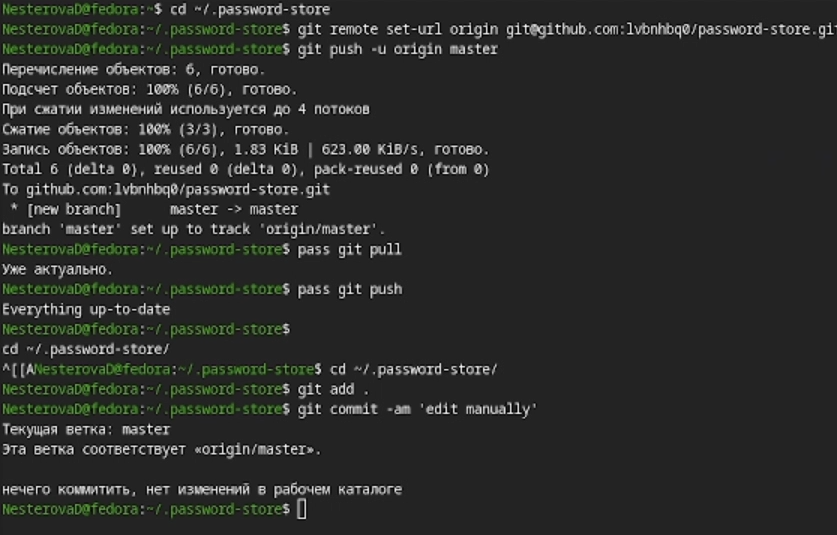
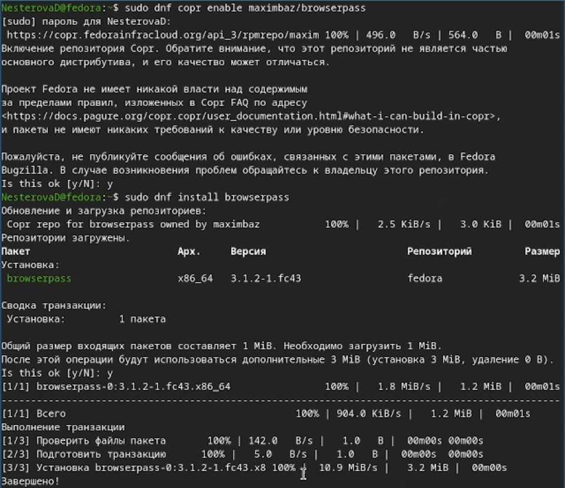
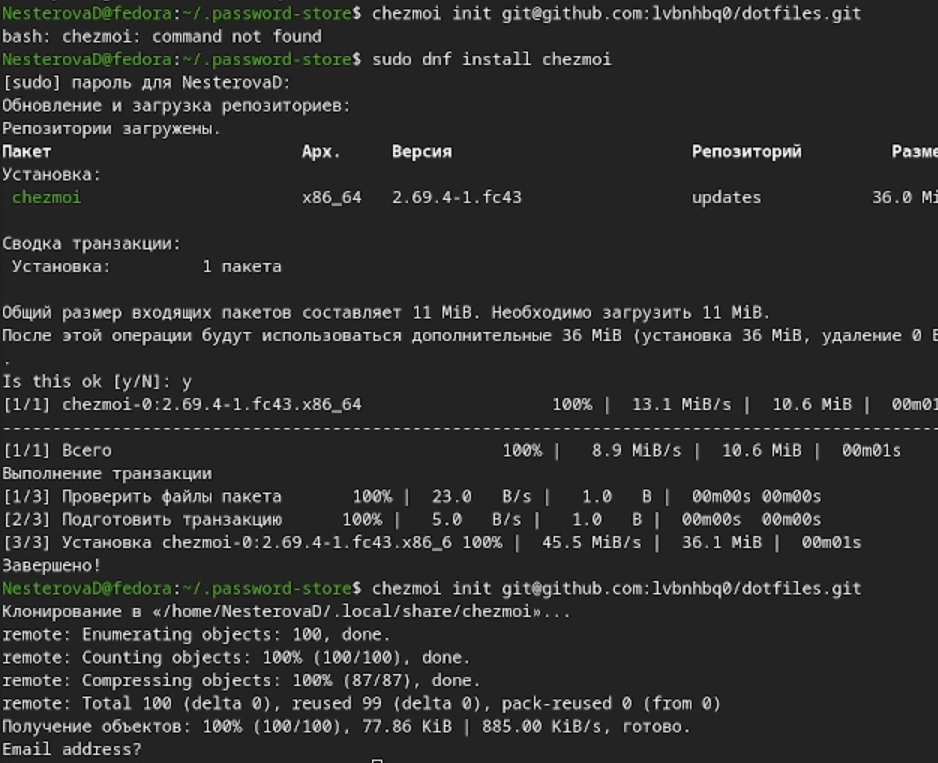
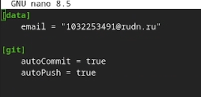

Познакомиться с pass, gopass, native messaging, chezmoi. Научиться пользоваться этими утилитами, синхронизировать их с гит.
Менеджер паролей pass — программа, сделанная в рамках идеологии Unix. Также носит название стандартного менеджера паролей для Unix (The standard Unix password manager). 1.1 Основные свойства Данные хранятся в файловой системе в виде каталогов и файлов. Файлы шифруются с помощью GPG-ключа. 1.2 Структура базы паролей Структура базы может быть произвольной, если Вы собираетесь использовать её напрямую, без промежуточного программного обеспечения. Тогда семантику структуры базы данных Вы держите в своей голове. Если же необходимо использовать дополнительное программное обеспечение, необходимо семантику заложить в структуру базы паролей. chezmoi используется для управления файлами конфигурации домашнего каталога пользователя.
Устанавливаю pass. (рис. 1)

Инициализирую pass на машине, создаю первый пароль. (рис. 2)

Устанавливаю дополнительное ПО и шрифты. (рис. 3)

Содаю и настраиваю репозиторий. (рис. 4)

Скачиваю пакеты, настраиваю интерфейс с броузером. (рис. 5)

Скачиваю chezmoi, настраиваю машину и изучаю ежедневные команды. (рис. 6)

Изменяю конфигурацию, включив автоматическое фиксирование изменений. (рис. 7)

Я познакомилась с pass, gopass, native messaging, chezmoi. Научилась пользоваться этими утилитами, а также синхронизировала их с гит.